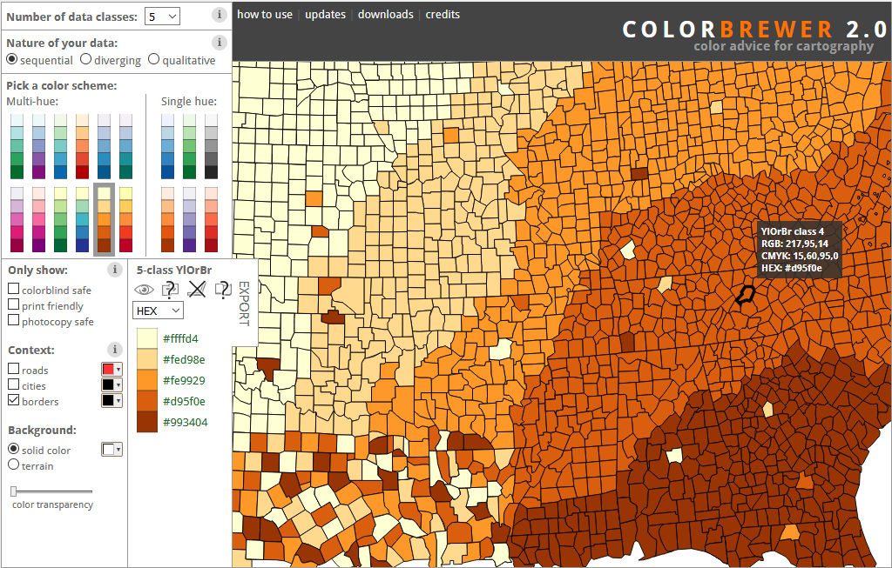

2. Create new layer in OWS-context file¶
In this exercise we are going to add a new layer to the workshop.gpkg a you have downloaded at Open GeoPackage in QGIS.
The layer will be added in two steps:
- Create a new style record in the
owc_styletable - Edit the OWS context document stored in the
owc_contexttable
2.1. Create a new style¶
Obtain metadata dataset¶
The wijken en buurten dataset from the CBS (Centraal Bureau voor Statistiek, Dutch national statistics office) comes with a PDF that describes the dataset (the metadata of the dataset). This PDF is stored in the workshop.gpkg file. The PDF can be extracted from the database through the following steps:
- Open the table
owc_resourcein the Browse Data table - Select the content field of the record with your mouse
- On the right side of the window, click the export button (above the field editor), this opens up a file picker dialog to set the destination of the export,
- Enter a filename that ends with
.pdf
{kind=link}
Create new SLD¶
For our new style we choose the attribute P_HH_M_K to base the style on. In the PDF more information is give for this specific attribute:
P_HH_M_K: Huishoudens met kinderen [%] Het aantal meerpersoonshuishoudens met kinderen uitgedrukt in hele procenten van het totaal aantal particuliere huishoudens. Meerpersoonshuishoudens met kinderen bestaan uit niet-gehuwde paren met kinderen, echtparen met kinderen en eenouderhuishoudens.
The new style will be applied to the dataset wijken_2017. Before we classify the data we need to know some basic statistics of the column P_HH_M_K, to get an idea of what the data looks like. Execute the following SQL in the DB Browser for SQLITE on the workshop.gpkg database:
select max(P_HH_M_K) as 'max', min(P_HH_M_K) as 'min' from wijk_2017 where P_HH_M_K > -1 ;
That outputs max=74, min=0.
Because the attribute P_HH_M_K is a percentage we can divide the data in 5 equal bins of 20:
0-20
20-40
40-60
60-80
80-100
Next we need to create a color ramp to represent the different values. ColorBrewer has an excellent web application for this. In our case we have sequential data with 5 classes:
{kind=link}
And copy over the hex color values (see the export tab): #ffffd4, #fed98e, #fe9929, #d95f0e, #993404.
Copy over the value the content column of the record with name wijk_2017 from the owc_style table. Use this as a template to create a new SLD file that uses the attribute P_HH_M_K, the bins 0-20,``20-40``,``40-60``,``60-80``,``80-100`` and the color values #ffffd4, #fed98e, #fe9929, #d95f0e, #993404.
Give the NamedLayer/se:Name element a new name, such as wijk_2017_huishoudens_kinderen. This will be name of our new layer.
You can see the result here .
Create new style record¶
Perform the following steps to create a new style record:
- When done create a new record in the
owc_styletable - Paste the just created complete SLD document in the contents field.
- Set the
nametowijk_2017_huishoudens_kinderen - Set the
mime_typetoapplication/vnd.sld+xml - Click the button Write Changes to save the changes to the GeoPackage
{kind=link}
2.2. Edit the OWS context document¶
The next step is to create a new layer in the OWS-context document that will make use of the new style we just created. Copy the content field of the only record in the owc_context table and paste it in a text editor.
Replace the entry with title wijk_2017 with the following entry element:
<entry>
<id>http://www.geocat.net/maps//layers/wijk_2017_huishoudens_kinderen</id>
<title>wijk_2017</title>
<updated>2017-11-21T17:57:22</updated>
<category scheme="http://www.opengis.net/spec/owc/active" term="true"/>
<owc:offering code="http://www.opengis.net/spec/owc-atom/1.0/req/gpkg">
<owc:content href="#table=wijk_2017" type="application/x-sqlite"/>
<owc:styleSet>
<owc:name>wijk_2017_huishoudens_kinderen</owc:name>
<owc:title>wijk_2017_huishoudens_kinderen</owc:title>
<owc:content href="#table=owc_style&name=wijk_2017_huishoudens_kinderen" type="application/sld+xml"/>
</owc:styleSet>
</owc:offering>
</entry>
Note
We need to replace the entry, because it is not possible to add an entry in the OWS-context document with a title that is not in the list of layers of the GeoPackage. A bug in the QGIS GeoPackage Extension, the title of entries in the OWS-context document should be able to contain any value (that is a valid string).
You can download the resulting OWS-context file here
Copy and paste the entire OWS-context document back into the content field of the only record in the owc_context table. Do not forget to click Apply and then Write Changes to persist the changes to the database.
Close the DB Browser for SQLite application and open up the modified workshop.gpkg file in QGIS:
{kind=link}
Note
The current style is not optimal for the distribution of the data. As an exercise create an SLD that fits the distribution of the data better.